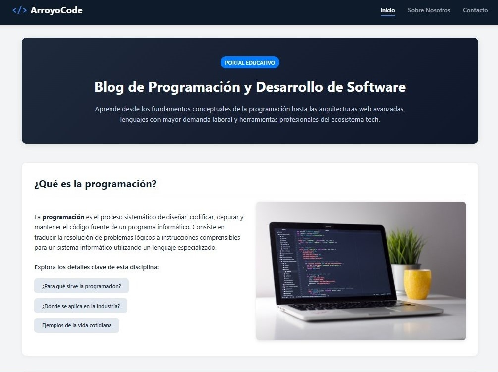

Proyecto Blog de Programación
ArroyoCode
Blog informativo sobre desarrollo de software y programación web con arquitectura responsiva de 3 columnas, catálogo de conceptos técnicos, modales interactivos y formulario de contacto con alertas dinámicas.